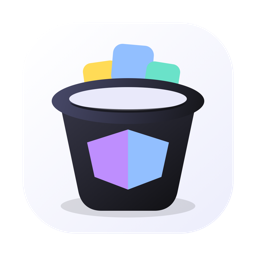

빠른 버킷 탐색
버킷, prefix, object를 데스크톱에 맞춘 인터페이스로 빠르게 훑어봅니다.

Bucket Studio로컬 우선 오브젝트 스토리지 브라우저
Bucket Studio는 Windows, macOS, Linux에서 AWS S3, Cloudflare R2, Wasabi, MinIO, 호환 엔드포인트를 같은 인터페이스로 다룰 수 있게 해줍니다.
최신 베타: v0.1.0 build 2. 현재 Windows x64가 주요 베타 대상입니다.
만든 이유
Bucket Studio는 여러 운영체제를 오가면서도 버킷 탐색, 업로드, 다운로드, presigned URL, 삭제 전 미리보기 같은 흐름을 예측 가능하게 쓰고 싶은 사람을 위해 만들었습니다.
버킷, prefix, object를 데스크톱에 맞춘 인터페이스로 빠르게 훑어봅니다.
클라우드 자격 증명을 외부 서버로 보내지 않고 OS 파일 선택기로 전송합니다.
설정한 엔드포인트와 자격 증명으로 실제 provider-signed URL을 만듭니다.
실제 삭제 전에 대상과 영향을 확인하는 흐름을 중심으로 설계했습니다.
보안 모델
현재 릴리스
macOS와 Linux 패키지는 베타 패키징과 서명 경로가 안정된 뒤 제공할 예정입니다.
후원 기반 베타
후원 링크를 준비 중입니다. 후원금은 코드 서명 인증서, 스토어 계정, 패키징, Windows/macOS/Linux 유지보수에 사용됩니다.